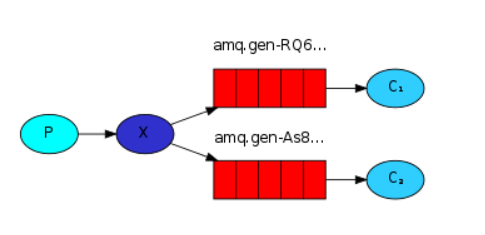

java面试之RabbitMQ
Java面试之RabbitMQ
什么是MQ
MQ（Message Queue）消息队列，是基础数据结构中“先进先出”的一种数据机构。指把要传输的数据（消息）放在队列中，用队列机制来实现软件之间的通信——(生产者产生消息并把消息放入队列，然后由消费者去处理)。消费者可以到指定队列拉取消息，或者订阅相应的队列，由MQ服务端给其推送消息。
什么是列队
- 列队是以先进先出方式的存储结构
- 实际生活中，队列的应用随处可见，比如排队买 XXX、医院的挂号系统等，采用的都是队列的结构。
为什么使用MQ
- 异步处理 - 相比于传统的串行、并行方式，提高了系统吞吐量
- 应用解耦 - 系统间通过消息通信，不用关心其他系统的处理。
- 流量削锋 - 可以通过消息队列长度控制请求量；可以缓解短时间内的高并发请求。
- 日志处理 - 解决大量日志传输。
- 消息通讯 - 消息队列一般都内置了高效的通信机制，因此也可以用在纯的消息通讯。比如实现点对点消息队列，或者聊天室等。
MQ的优点
主要是：解耦、异步、削峰。
解耦：A 系统发送数据到 BCD 三个系统，通过接口调用发送。如果 E 系统也要这个数据呢？那如果 C 系统现在不需要了呢？A 系统负责人几乎崩溃…A 系统跟其它各种乱七八糟的系统严重耦合，A 系统产生一条比较关键的数据，很多系统都需要 A 系统将这个数据发送过来。如果使用 MQ，A 系统产生一条数据，发送到 MQ 里面去，哪个系统需要数据自己去 MQ 里面消费。如果新系统需要数据，直接从 MQ 里消费即可；如果某个系统不需要这条数据了，就取消对 MQ 消息的消费即可。这样下来，A 系统压根儿不需要去考虑要给谁发送数据，不需要维护这个代码，也不需要考虑人家是否调用成功、失败超时等情况。
就是一个系统或者一个模块，调用了多个系统或者模块，互相之间的调用很复杂，维护起来很麻烦。但是其实这个调用是不需要直接同步调用接口的，如果用 MQ 给它异步化解耦。
异步：A 系统接收一个请求，需要在自己本地写库，还需要在 BCD 三个系统写库，自己本地写库要 3ms，BCD 三个系统分别写库要 300ms、450ms、200ms。最终请求总延时是 3 + 300 + 450 + 200 = 953ms，接近 1s，用户感觉搞个什么东西，慢死了慢死了。用户通过浏览器发起请求。如果使用 MQ，那么 A 系统连续发送 3 条消息到 MQ 队列中，假如耗时 5ms，A 系统从接受一个请求到返回响应给用户，总时长是 3 + 5 = 8ms。
削峰：减少高峰时期对服务器压力。主要是还是来自于互联网的业务场景，例如，马上即将开始的春节火车票抢购，大量的用户需要同一时间去抢购；以及大家熟知的阿里双11秒杀，这个时候在同一时间点请求来的太猛烈，服务器受不住。削峰，等于是减缓服务器压力，可以以漏斗，或者水管的方式来进行消费，想一想水管和漏斗的机制大家就明白了
消息队列有什么优缺点？RabbitMQ有什么优缺点？
- 优点上面已经说了，就是在特殊场景下有其对应的好处，解耦、异步、削峰。
- 缺点有以下几个：
- 系统可用性降低
本来系统运行好好的，现在你非要加入个消息队列进去，那消息队列挂了，你的系统不是呵呵了。因此，系统可用性会降低； - 系统复杂度提高
加入了消息队列，要多考虑很多方面的问题，比如：一致性问题、如何保证消息不被重复消费、如何保证消息可靠性传输等。因此，需要考虑的东西更多，复杂性增大。 - 一致性问题
A 系统处理完了直接返回成功了，人都以为你这个请求就成功了；但是问题是，要是 BCD 三个系统那里，BD 两个系统写库成功了，结果 C 系统写库失败了，咋整？你这数据就不一致了。
- 系统可用性降低
所以消息队列实际是一种非常复杂的架构，你引入它有很多好处，但是也得针对它带来的坏处做各种额外的技术方案和架构来规避掉，做好之后，你会发现，妈呀，系统复杂度提升了一个数量级，也许是复杂了 10 倍。但是关键时刻，用，还是得用的。
Kafka、ActiveMQ、RabbitMQ、RocketMQ 有什么优缺点？
综上，各种对比之后，有如下建议：
- 一般的业务系统要引入 MQ，最早大家都用 ActiveMQ，但是现在确实大家用的不多了，没经过大规模吞吐量场景的验证，社区也不是很活跃，所以大家还是算了吧，我个人不推荐用这个了；
- 后来大家开始用 RabbitMQ，但是确实 erlang 语言阻止了大量的 Java 工程师去深入研究和掌控它，对公司而言，几乎处于不可控的状态，但是确实人家是开源的，比较稳定的支持，活跃度也高；
- 不过现在确实越来越多的公司会去用 RocketMQ，确实很不错，毕竟是阿里出品，但社区可能有突然黄掉的风险（目前 RocketMQ 已捐给 Apache，但 GitHub 上的活跃度其实不算高）对自己公司技术实力有绝对自信的，推荐用 RocketMQ，否则回去老老实实用 RabbitMQ 吧，人家有活跃的开源社区，绝对不会黄。
- 所以中小型公司，技术实力较为一般，技术挑战不是特别高，用 RabbitMQ 是不错的选择；大型公司，基础架构研发实力较强，用 RocketMQ 是很好的选择。
- 如果是大数据领域的实时计算、日志采集等场景，用 Kafka 是业内标准的，绝对没问题，社区活跃度很高，绝对不会黄，何况几乎是全世界这个领域的事实性规范。
MQ 有哪些常见问题？如何解决这些问题？
- 消息的顺序问题
- 消息的重复问题
消息的顺序问题
消息有序指的是可以按照消息的发送顺序来消费。
假如生产者产生了 2 条消息：M1、M2，假定 M1 发送到 S1，M2 发送到 S2，如果要保证 M1 先于 M2 被消费，怎么做？
解决方案：保证生产者 - MQServer - 消费者是一对一对一的关系
缺陷:
- 并行度就会成为消息系统的瓶颈（吞吐量不够）
- 更多的异常处理，比如：只要消费端出现问题，就会导致整个处理流程阻塞，我们不得不花费更多的精力来解决阻塞的问题。 （2）通过合理的设计或者将问题分解来规避。
- 不关注乱序的应用实际大量存在
- 队列无序并不意味着消息无序 所以从业务层面来保证消息的顺序而不仅仅是依赖于消息系统，是一种更合理的方式。
消息的重复问题
- 造成消息重复的根本原因是：网络不可达。
- 所以解决这个问题的办法就是绕过这个问题。那么问题就变成了：如果消费端收到两条一样的消息，应该怎样处理？
- 消费端处理消息的业务逻辑保持幂等性。只要保持幂等性，不管来多少条重复消息，最后处理的结果都一样。保证每条消息都有唯一编号且保证消息处理成功与去重表的日志同时出现。利用一张日志表来记录已经处理成功的消息的 ID，如果新到的消息 ID 已经在日志表中，那么就不再处理这条消息。
什么是RabbitMQ？
- RabbitMQ是一款开源的，Erlang编写的，消息中间件；
最大的特点就是消费并不需要确保提供方存在,实现了服务之间的高度解耦
可以用它来：解耦、异步、削峰。
rabbitmq 的使用场景
（1）服务间异步通信
（2）顺序消费
（3）定时任务
（4）请求削峰
RabbitMQ基本概念
- Broker： 简单来说就是消息队列服务器实体
- Exchange： 消息交换机，它指定消息按什么规则，路由到哪个队列
- Queue： 消息队列载体，每个消息都会被投入到一个或多个队列
- Binding： 绑定，它的作用就是把exchange和queue按照路由规则绑定起来
- Routing Key： 路由关键字，exchange根据这个关键字进行消息投递
- VHost： vhost 可以理解为虚拟 broker ，即 mini-RabbitMQ server。其内部均含有独立的 queue、exchange 和 binding 等，但最最重要的是，其拥有独立的权限系统，可以做到 vhost 范围的用户控制。当然，从 RabbitMQ 的全局角度，vhost 可以作为不同权限隔离的手段（一个典型的例子就是不同的应用可以跑在不同的 vhost 中）。
- Producer： 消息生产者，就是投递消息的程序
- Consumer： 消息消费者，就是接受消息的程序
- Channel： 消息通道，在客户端的每个连接里，可建立多个channel，每个channel代表一个会话任务
由Exchange、Queue、RoutingKey三个才能决定一个从Exchange到Queue的唯一的线路。
RabbitMQ的工作模式
simple模式（即最简单的收发模式）
- 消息产生消息，将消息放入队列
- 消息的消费者(consumer) 监听 消息队列,如果队列中有消息,就消费掉,消息被拿走后,自动从队列中删除(隐患 消息可能没有被消费者正确处理,已经从队列中消失了,造成消息的丢失，这里可以设置成手动的ack,但如果设置成手动ack，处理完后要及时发送ack消息给队列，否则会造成内存溢出)。
work工作模式(资源的竞争)
消息产生者将消息放入队列消费者可以有多个,消费者1,消费者2同时监听同一个队列,消息被消费。C1 C2共同争抢当前的消息队列内容,谁先拿到谁负责消费消息(隐患：高并发情况下,默认会产生某一个消息被多个消费者共同使用,可以设置一个开关(syncronize) 保证一条消息只能被一个消费者使用)。
publish/subscribe发布订阅(共享资源)

routing路由模式
- 消息生产者将消息发送给交换机按照路由判断,路由是字符串(info) 当前产生的消息携带路由字符(对象的方法),交换机根据路由的key,只能匹配上路由key对应的消息队列,对应的消费者才能消费消息;
- 根据业务功能定义路由字符串
- 从系统的代码逻辑中获取对应的功能字符串,将消息任务扔到对应的队列中。
- 业务场景:error 通知;EXCEPTION;错误通知的功能;传统意义的错误通知;客户通知;利用key路由,可以将程序中的错误封装成消息传入到消息队列中,开发者可以自定义消费者,实时接收错误;
topic 主题模式(路由模式的一种)
- 星号井号代表通配符
- 星号代表多个单词,井号代表一个单词
- 路由功能添加模糊匹配
- 消息产生者产生消息,把消息交给交换机
- 交换机根据key的规则模糊匹配到对应的队列,由队列的监听消费者接收消息消费
（在我的理解看来就是routing查询的一种模糊匹配，就类似sql的模糊查询方式）
如何保证RabbitMQ消息的顺序性？
- 拆分多个 queue(消息队列)，每个 queue(消息队列) 一个 consumer(消费者)，就是多一些 queue (消息队列)而已，确实是麻烦点；
- 或者就一个 queue (消息队列)但是对应一个 consumer(消费者)，然后这个 consumer(消费者)内部用内存队列做排队，然后分发给底层不同的 worker 来处理。
如何解决消息丢失的问题
为什么消息会丢失？
跟消息重复问题类似，消息丢失也可能出现在生产者、MQ、消费者三者中。这三者导致消息丢失的原因是什么呢？
- 生产者：生产者推送消息到 MQ 中，由于网络抖动等原因消息没有推送到 MQ 中，或者消息推送到 MQ 中了但是 MQ 内部出错了，导致消息丢失。
- MQ：MQ 接收到消息后先把消息暂存在 OS Cache 中，消费者还没消费的时候 MQ 自己挂了，导致消息丢失。
- 消费者：消费者消费到了这条消息，但是还没来得及处理，消费者自己挂了，但是消费者已经告诉了 MQ 自己已经消费完了，导致消息丢失。
如何解决消息丢失的问题
不同的消息队列解决消息丢失的方法是不同的，下面分别介绍不同 MQ 是如何解决消息丢失问题的。
生产者导致消息丢失
RabbitMQ 有两种方案可以避免消息丢失，一种是 RabbitMQ 的事务机制，一种是 Confirm 模式。这里先看一下事务机制。
RabbitMQ 客户端中 Channel 接口有这么几个函数，channel.txSelect 用来开启一个事务，channel.txCommit 用来提交事务，channel.txRollback 用来回滚事务。为了避免消息丢失，我们可以在发送消息前，先开启执行 txSelect 方法开启一个事务，接着发送消息，如果消息投递失败，执行 txRollback 回滚事务，再执行重试操作重新发送，如果消息投递成功，执行 txCommit 方法提交事务。
这个方案可以保证我们的消息一定是投递成功的，但是几乎没有人使用这种方案。因为这个方案是同步阻塞的，也就是一条消息发送后，一定要等到 MQ 回应之后执行了提交或回滚事务操作，才能继续往下执行。大致过程如下图所示：
RabbitMQ 还提供了另一种方法避免生产者消息丢失问题，那就是 Confirm 模式。Confirm 模式是这样子的，生产者发送消息后，不需要等待 MQ 的回应，MQ 接收成功后，会回调生产者的 ack 接口通知生产者消息投递成功了，如果 MQ 接收失败，会回调 nack 接口通知生产者消息投递失败了，生产者可以重新对这条消息进行投递。大致过程如下图所示：

RabbitMQ 导致消息丢失
RabbitMQ 自己弄丢了数据是由于持久化导致的。通常 RabbitMQ 接收到消息之后写入 OS Cache 中，就会给生产者返回接收成功的回应，这时如果 RabbitMQ 挂了，消息也就丢失了。解决方法可以结合生产者的 Confirm 模式，配置 RabbitMQ 持久化到磁盘之后，才给生产者返回 ack 信号。
消费者导致消息丢失
RabbitMQ 在消费者端弄丢数据，是由于 RabbitMQ 的默认自动提交 ack 导致的。解决方法就是关闭 RabbitMQ 的自动响应 ack 即可。这样消息没有处理完成，消费者挂了，RabbitMQ 会认为消息没有处理成功，会再次推送消息给消费者处理。
消息如何分发？
若该队列至少有一个消费者订阅，消息将以循环（round-robin）的方式发送给消费者。每条消息只会分发给一个订阅的消费者（前提是消费者能够正常处理消息并进行确认）。通过路由可实现多消费的功能
消息怎么路由？
消息提供方->路由->一至多个队列消息发布到交换器时，消息将拥有一个路由键（routing key），在消息创建时设定。通过队列路由键，可以把队列绑定到交换器上。消息到达交换器后，RabbitMQ 会将消息的路由键与队列的路由键进行匹配（针对不同的交换器有不同的路由规则）；
常用的交换器主要分为一下三种：
- fanout：如果交换器收到消息，将会广播到所有绑定的队列上
- direct：如果路由键完全匹配，消息就被投递到相应的队列
- topic：可以使来自不同源头的消息能够到达同一个队列。 使用 topic 交换器时，可以使用通配符
消息基于什么传输？
由于 TCP 连接的创建和销毁开销较大，且并发数受系统资源限制，会造成性能瓶颈。RabbitMQ 使用信道的方式来传输数据。信道是建立在真实的 TCP 连接内的虚拟连接，且每条 TCP 连接上的信道数量没有限制。
如何保证消息不被重复消费？或者说，如何保证消息消费时的幂等性？
- 先说为什么会重复消费：正常情况下，消费者在消费消息的时候，消费完毕后，会发送一个确认消息给消息队列，消息队列就知道该消息被消费了，就会将该消息从消息队列中删除；
- 但是因为网络传输等等故障，确认信息没有传送到消息队列，导致消息队列不知道自己已经消费过该消息了，再次将消息分发给其他的消费者。
- 针对以上问题，一个解决思路是：保证消息的唯一性，就算是多次传输，不要让消息的多次消费带来影响；保证消息等幂性；
- 比如：在写入消息队列的数据做唯一标示，消费消息时，根据唯一标识判断是否消费过；
- 假设你有个系统，消费一条消息就往数据库里插入一条数据，要是你一个消息重复两次，你不就插入了两条，这数据不就错了？但是你要是消费到第二次的时候，自己判断一下是否已经消费过了，若是就直接扔了，这样不就保留了一条数据，从而保证了数据的正确性
如何确保消息正确地发送至 RabbitMQ？ 如何确保消息接收方消费了消息？
发送方确认模式
- 将信道设置成 confirm 模式（发送方确认模式），则所有在信道上发布的消息都会被指派一个唯一的 ID。
- 一旦消息被投递到目的队列后，或者消息被写入磁盘后（可持久化的消息），信道会发送一个确认给生产者（包含消息唯一 ID）。
- 如果 RabbitMQ 发生内部错误从而导致消息丢失，会发送一条 nack（notacknowledged，未确认）消息。
- 发送方确认模式是异步的，生产者应用程序在等待确认的同时，可以继续发送消息。当确认消息到达生产者应用程序，生产者应用程序的回调方法就会被触发来处理确认消息。
接收方确认机制
- 消费者接收每一条消息后都必须进行确认（消息接收和消息确认是两个不同操作）。只有消费者确认了消息，RabbitMQ 才能安全地把消息从队列中删除.
- 这里并没有用到超时机制，RabbitMQ 仅通过 Consumer 的连接中断来确认是否需要重新发送消息。也就是说，只要连接不中断，RabbitMQ 给了 Consumer 足够长的时间来处理消息。保证数据的最终一致性；
下面罗列几种特殊情况
- 如果消费者接收到消息，在确认之前断开了连接或取消订阅，RabbitMQ 会认为消息没有被分发，然后重新分发给下一个订阅的消费者。（可能存在消息重复消费的隐患，需要去重）
- 如果消费者接收到消息却没有确认消息，连接也未断开，则 RabbitMQ 认为该消费者繁忙，将不会给该消费者分发更多的消息。
如何保证RabbitMQ消息的可靠传输？
- 消息不可靠的情况可能是消息丢失，劫持等原因；
- 丢失又分为：生产者丢失消息、消息列表丢失消息、消费者丢失消息
生产者丢失消息
从生产者弄丢数据这个角度来看，RabbitMQ提供transaction和confirm模式来确保生产者不丢消息；
transaction机制就是说：发送消息前，开启事务（channel.txSelect()）,然后发送消息，如果发送过程中出现什么异常，事务就会回滚（channel.txRollback()）,如果发送成功则提交事务（channel.txCommit()）。然而，这种方式有个缺点：吞吐量下降；
confirm模式用的居多：一旦channel进入confirm模式，所有在该信道上发布的消息都将会被指派一个唯一的ID（从1开始），一旦消息被投递到所有匹配的队列之后；
rabbitMQ就会发送一个ACK给生产者（包含消息的唯一ID），这就使得生产者知道消息已经正确到达目的队列了；
如果rabbitMQ没能处理该消息，则会发送一个Nack消息给你，你可以进行重试操作。
消息队列丢数据
消息持久化。
处理消息队列丢数据的情况，一般是开启持久化磁盘的配置。
这个持久化配置可以和confirm机制配合使用，你可以在消息持久化磁盘后，再给生产者发送一个Ack信号。
这样，如果消息持久化磁盘之前，rabbitMQ阵亡了，那么生产者收不到Ack信号，生产者会自动重发。
那么如何持久化呢？
这里顺便说一下吧，其实也很容易，就下面两步
将queue的持久化标识durable设置为true,则代表是一个持久的队列
发送消息的时候将deliveryMode=2
这样设置以后，即使rabbitMQ挂了，重启后也能恢复数据
消费者丢失消息
消费者丢数据一般是因为采用了自动确认消息模式，改为手动确认消息即可！
消费者在收到消息之后，处理消息之前，会自动回复RabbitMQ已收到消息；
如果这时处理消息失败，就会丢失该消息；
解决方案：处理消息成功后，手动回复确认消息。
为什么不应该对所有的 message 都使用持久化机制？
首先，必然导致性能的下降，因为写磁盘比写 RAM 慢的多，message 的吞吐量可能有 10 倍的差距。
其次，message 的持久化机制用在 RabbitMQ 的内置 cluster 方案时会出现“坑爹”问题。矛盾点在于，若 message 设置了 persistent 属性，但 queue 未设置 durable 属性，那么当该 queue 的 owner node 出现异常后，在未重建该 queue 前，发往该 queue 的 message 将被 blackholed ；若 message 设置了 persistent 属性，同时 queue 也设置了 durable 属性，那么当 queue 的 owner node 异常且无法重启的情况下，则该 queue 无法在其他 node 上重建，只能等待其 owner node 重启后，才能恢复该 queue 的使用，而在这段时间内发送给该 queue 的 message 将被 blackholed 。
所以，是否要对 message 进行持久化，需要综合考虑性能需要，以及可能遇到的问题。若想达到 100,000 条/秒以上的消息吞吐量（单 RabbitMQ 服务器），则要么使用其他的方式来确保 message 的可靠 delivery ，要么使用非常快速的存储系统以支持全持久化（例如使用 SSD）。另外一种处理原则是：仅对关键消息作持久化处理（根据业务重要程度），且应该保证关键消息的量不会导致性能瓶颈。
如何保证高可用的？RabbitMQ 的集群
- RabbitMQ 是比较有代表性的，因为是基于主从（非分布式）做高可用性的，我们就以 RabbitMQ 为例子讲解第一种 MQ 的高可用性怎么实现。RabbitMQ 有三种模式：单机模式、普通集群模式、镜像集群模式。
单机模式
就是 Demo 级别的，一般就是你本地启动了玩玩儿的?，没人生产用单机模式
普通集群模式
- 意思就是在多台机器上启动多个 RabbitMQ 实例，每个机器启动一个。
- 你创建的 queue，只会放在一个 RabbitMQ 实例上，但是每个实例都同步 queue 的元数据（元数据可以认为是 queue 的一些配置信息，通过元数据，可以找到 queue 所在实例）。你消费的时候，实际上如果连接到了另外一个实例，那么那个实例会从 queue 所在实例上拉取数据过来。这方案主要是提高吞吐量的，就是说让集群中多个节点来服务某个 queue 的读写操作
镜像集群模式
- 这种模式，才是所谓的 RabbitMQ 的高可用模式。跟普通集群模式不一样的是，在镜像集群模式下，你创建的 queue，无论元数据还是 queue 里的消息都会存在于多个实例上，就是说，每个 RabbitMQ 节点都有这个 queue 的一个完整镜像，包含 queue 的全部数据的意思。然后每次你写消息到 queue 的时候，都会自动把消息同步到多个实例的 queue 上。RabbitMQ 有很好的管理控制台，就是在后台新增一个策略，这个策略是镜像集群模式的策略，指定的时候是可以要求数据同步到所有节点的，也可以要求同步到指定数量的节点，再次创建 queue 的时候，应用这个策略，就会自动将数据同步到其他的节点上去了。
- 这样的好处在于，你任何一个机器宕机了，没事儿，其它机器（节点）还包含了这个 queue 的完整数据，别的 consumer 都可以到其它节点上去消费数据。坏处在于，第一，这个性能开销也太大了吧，消息需要同步到所有机器上，导致网络带宽压力和消耗很重！RabbitMQ 一个 queue 的数据都是放在一个节点里的，镜像集群下，也是每个节点都放这个 queue 的完整数据。
如何解决消息队列的延时以及过期失效问题？消息队列满了以后该怎么处理？有几百万消息持续积压几小时，说说怎么解决？
消息积压处理办法：临时紧急扩容：
先修复 consumer 的问题，确保其恢复消费速度，然后将现有 cnosumer 都停掉。
新建一个 topic，partition 是原来的 10 倍，临时建立好原先 10 倍的 queue 数量。
然后写一个临时的分发数据的 consumer 程序，这个程序部署上去消费积压的数据，消费之后不做耗时的处理，直接均匀轮询写入临时建立好的 10 倍数量的 queue。
接着临时征用 10 倍的机器来部署 consumer，每一批 consumer 消费一个临时 queue 的数据。这种做法相当于是临时将 queue 资源和 consumer 资源扩大 10 倍，以正常的 10 倍速度来消费数据。
等快速消费完积压数据之后，得恢复原先部署的架构，重新用原先的 consumer 机器来消费消息。
MQ中消息失效：假设你用的是 RabbitMQ，RabbtiMQ 是可以设置过期时间的，也就是 TTL。如果消息在 queue 中积压超过一定的时间就会被 RabbitMQ 给清理掉，这个数据就没了。那这就是第二个坑了。这就不是说数据会大量积压在 mq 里，而是大量的数据会直接搞丢。我们可以采取一个方案，就是批量重导，这个我们之前线上也有类似的场景干过。就是大量积压的时候，我们当时就直接丢弃数据了，然后等过了高峰期以后，比如大家一起喝咖啡熬夜到晚上12点以后，用户都睡觉了。这个时候我们就开始写程序，将丢失的那批数据，写个临时程序，一点一点的查出来，然后重新灌入 mq 里面去，把白天丢的数据给他补回来。也只能是这样了。假设 1 万个订单积压在 mq 里面，没有处理，其中 1000 个订单都丢了，你只能手动写程序把那 1000 个订单给查出来，手动发到 mq 里去再补一次。mq消息队列块满了：如果消息积压在 mq 里，你很长时间都没有处理掉，此时导致 mq 都快写满了，咋办？这个还有别的办法吗？没有，谁让你第一个方案执行的太慢了，你临时写程序，接入数据来消费，消费一个丢弃一个，都不要了，快速消费掉所有的消息。然后走第二个方案，到了晚上再补数据吧。
设计MQ思路
比如说这个消息队列系统，我们从以下几个角度来考虑一下：
首先这个 mq 得支持可伸缩性吧，就是需要的时候快速扩容，就可以增加吞吐量和容量，那怎么搞？设计个分布式的系统呗，参照一下 kafka 的设计理念，broker -> topic -> partition，每个 partition 放一个机器，就存一部分数据。如果现在资源不够了，简单啊，给 topic 增加 partition，然后做数据迁移，增加机器，不就可以存放更多数据，提供更高的吞吐量了？
其次你得考虑一下这个 mq 的数据要不要落地磁盘吧？那肯定要了，落磁盘才能保证别进程挂了数据就丢了。那落磁盘的时候怎么落啊？顺序写，这样就没有磁盘随机读写的寻址开销，磁盘顺序读写的性能是很高的，这就是 kafka 的思路。
其次你考虑一下你的 mq 的可用性啊？这个事儿，具体参考之前可用性那个环节讲解的 kafka 的高可用保障机制。多副本 -> leader & follower -> broker 挂了重新选举 leader 即可对外服务。
能不能支持数据 0 丢失啊？可以呀，有点复杂的。
本博客所有文章除特别声明外，均采用 CC BY-SA 4.0 协议 ，转载请注明出处！